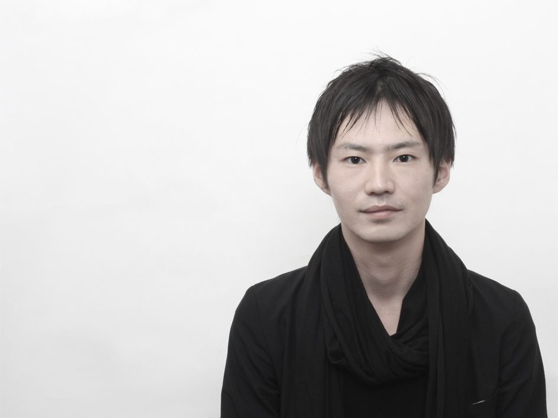

代表建築家について

DAISUKE SUMI角 大輔 Daisuke Sumi
一級建築士・角建築研究室 代表
建築物（規模・用途・新築・改築を問わず）の企画・設計・監理のほか、インテリア、会場構成、家具デザインなど幅広く手がけています。
経歴
1986島根県生まれ
2009近畿大学産業理工学部建築デザイン学科 卒業
2011近畿大学大学院 修了
2012大石和彦建築アトリエ
2016角建築研究室 設立
2018-近畿大学非常勤講師
加盟組織
日本建築学会 ／ 福岡県建築士会
受賞歴
2025グッドデザイン賞 受賞
2022筆の里創造の丘公苑「体験交流施設」新築工事 公募型建築プロポーザル 特定者
2022隠岐の島町西郷港周辺地区デザインコンペ 10選
2021グッドデザイン賞 受賞
2021第33回 福岡県美しいまちづくり建築賞 優秀賞
2021第33回 福岡県美しいまちづくり建築賞 福岡県建築住宅センター理事長賞
2021第14回 建築九州賞 佳作